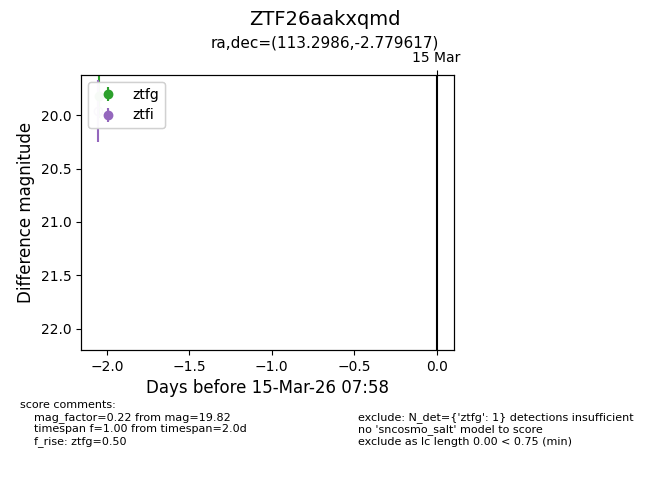
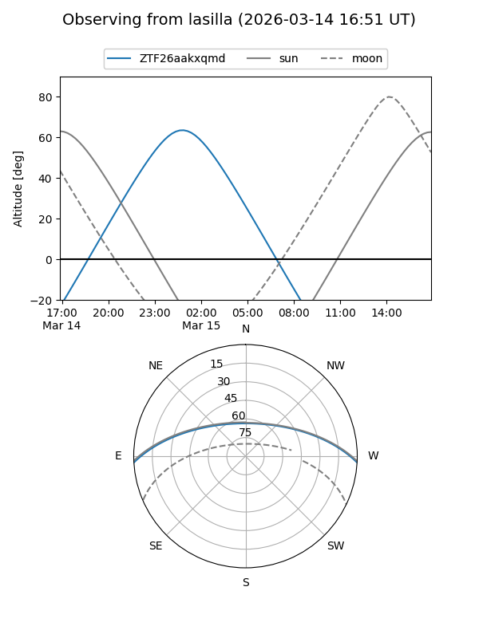
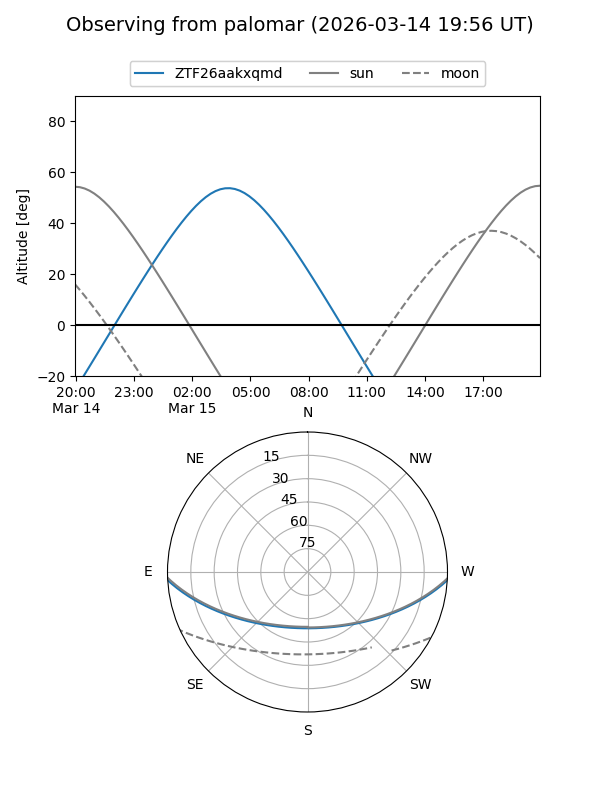

ZTF26aakxqmd
Target ZTF26aakxqmd at 2026-03-15 08:02
Aliases and brokers:
FINK: link
Lasair: link
ALeRCE: link
alt names
ZTF26aakxqmd (ztf,fink_ztf)
Coordinates:
equatorial (ra, dec) = 113.2986,-2.77962
equatorial (HMS+DMS) = 07:33:11.67,-02:46:46.62
galactic (l, b) = (220.2232,+7.98741)
Flags:
Photometry:
last ztfg=19.82
1 ztfg detections
Lightcurve

Visibility


Additional plots